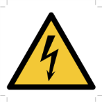

Proximity Sensor Installation and Setup
Purpose and Application
Purpose
To define a work instruction for the installation and setup of a proximity sensor (OIS-03261). The sensor must be properly aligned on the feeder mechanism so that the system can accurately detect the relationship between the shear cut and the rotation of the Servo Gob Distributor.
Application
This work instruction applies to Space manufacturing facilities, and is required on all Servo Gob Distributor installations with mechanical feeder mechanisms.
Safety
 |
 |
 |
Instructions
- Before starting the work instruction activity, perform the following steps:
- Do not begin these tasks without confirmation that personnel directly involved have completed the required training associated with the work instruction activity and have reviewed this document.
- Gather necessary tools and equipment as identified below in the Equipment Section
- Wear and use additional Personal Protective Equipment (PPE) and safety equipment required for this specific work instruction.
- Obey all applicable safety requirements and procedures.
- Follow all Lockout/Tagout procedures when work instruction activity requires isolating energy in the designated area. Verify energy is isolated before starting work.
- For a Servo Gob Distributor with a mechanical feeder mechanism and
a mechanical shear mechanism, perform the following steps: Note:
If the Servo Gob Distributor has a mechanical feeder mechanism and a Servo Parallel Shears mechanism, use Section 3.3
- Mount the target, sensor, and bracket on the feeder mechanism. Refer to drawing OIS-03261
- Rotate the feeder mechanism until the "0" degree line of the shear cam is directly perpendicular to the lever arm cam follower roller.
- Rotate the target around the shear cam shaft in the direction of normal rotation until the sensor senses the target, and the red LED just starts to turn on.
- Verify that the cam and cam follower did not move from its proper relationship while rotating the target.
- When everything is in the proper position, tighten down the target.
- For a Servo Gob Distributor with a mechanical feeder mechanism and
a Servo Parallel Shears mechanism, perform the following steps: Note:
If the Servo Gob Distributor has a mechanical feeder mechanism and a mechanical shear mechanism, use Section 3.2.
- Mount the target, sensor, and bracket on the feeder mechanism. Refer to drawing OIS-03261.
- Display the Motor/Resolver Test Menu for the Servo Parallel Shears.
- At the Main Operator Display Station, select the Servo Parallel Shears Main Menu.
- Press the UTILITY MENU button. The Utility Menu will appear.
- Select the FIELD I/O TEST menu in the Utility Menu. Then, press the ENTER button. The Field I/O Test Menu will appear.
- Press the MOTOR , andamp; RESOLVER button. The Motor/Resolver Test Menu will appear
- Rotate the feeder mechanism until the master resolver reads 180 degrees on the Motor/Resolver Test Menu for the Servo Parallel Shears.
- Rotate the target around the shear cam shaft in the direction of normal rotation until the sensor senses the target, and the red LED just starts to turn on.
- Verify that the master resolver still shows 180 degrees on the Menu screen.
- When everything is in the proper position, tighten down the target.
- Upon completion of tasks, perform the following steps:
- After the designated work area is confirmed clear and personnel are aware of the pending restart, follow all Lockout/Tagout procedures to restart energy supplied to the designated area. Verify energy is active.
- Notify appropriate personnel that the work instruction activity has been completed.
- Record and report findings and results
- Follow appropriate instructions for notification of findings and results relating to specifications, targets and/or reaction limits.
Required Training
Before performing this work instruction, applicable personnel must be trained by an authorized trainer on the required training contents listed in this document.
References
Document Classification
- Asset Protection and Stability
- Safety and Environment
Approval
|
Region |
Representative |
|
Asia Pacific |
John Pillen |
|
Europe |
Jean-Pierre Locato, Marco Marchelli, Ruud Bormans, Rafal Szkoda |
|
Americas South |
Paul Arriz |
|
Americas North |
Daniel Devries |
|
Global Operations |
Juan Ishiguro, Franklin Barrios |
Revision History
| 2020-02-21 |
Approved by Juan Ishiguro, IS Machines Discipline Leader Original Issue |
| 2022-05-09 |
Approved by Franklin Barrios, Global Leader FES Network. Moved to GMF Site as FES-03-703 |